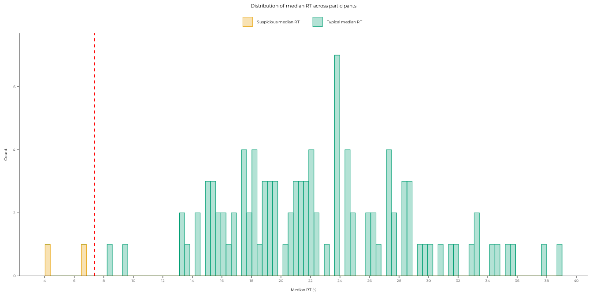

This vignette details all the processing steps designed to transform the source data collected into the raw data used in the package, followed by the rationale behind the detection and removal of outlier participants from the raw data to get the clean data sets used for the analyses.
From source data to raw data
The data for this study were collected online among several other studies on mental imagery through the Inner Experience Lab website. This multi-study online project was designed so that people could participate in various studies seamlessly without having to fill in the same information or questionnaires multiple times. As such, survey data for any given participant (demographics, questionnaires, feedbacks, etc.) could come from different studies. A central data extraction pipeline had to be designed to extract and merge the survey data from different studies while isolating specific experiment data from each study. The code for this central pipeline is in a separate private repository, and the data from all the studies is in a private OSF repository (for obvious privacy and ownership reasons).
The source data for the present study is retrieved
from this OSF repository using a private token (not available in the
public GitHub repository). The code for these operations, however, is
publicly available in the package files in the data-raw/
folder:
In
01_import_osf_data.R, the common survey data set (with all collected survey data for each participant, some irrelevant) and the source experiment data specific to this study (with questionably clean variable names and some irrelevant variables) are imported from the private OSF repository into theinst/extdata/folder of the package.-
In
02_create_package_data.R, these two source data sets undergo basic cleaning steps to select, organise and rename relevant variables. Another crucial step here is the creation of various logical variables to flag participants with specific characteristics based on the information they typed manually in the demographic or feedback questionnaires. Their IDs were identified manually and hard coded in this script. These variables are:-
has_adhd: whether the participant has ADHD -
has_asd: whether the participant has ASD -
has_dyslexia: whether the participant has dyslexia -
has_other_neuro_trouble: whether the participant has other neurological troubles (rare or unique cases in the sample) -
has_treatment: whether the participant is under treatment for a neurological trouble -
has_been_distracted: whether the participant has been distracted during the experiment, lacked focus, gave up, etc. -
has_cheated: whether the participant has used external help to answer the questions (e.g. paper, calculator, etc.)
All of these are self-reports, but we observed that participants seemed usually honest about these (e.g., three admitted to have used external help or tools), and we did not observe any systematic bias in the data based on these variables1.
Finally, native package data is created in the
data/folder usingusethis::use_data(), which saves the data in a format tailored for use in R packages. These two data sets,experiment_dataandsurvey_data, constitute our proper raw data (not necessarily good data, but understandable and usable data). -
- In
03_export_to_osf.R, araw_data.xlsxExcel file is created for easier sharing. The three raw data files (experiment_data.rda,survey_data.rda, andraw_data.xlsx) are then uploaded to the public OSF repository dedicated to this study. This is the data that is available natively in the package in theexperiment_dataandsurvey_dataobjects.
The raw data sets are directly available upon loading the package:
library(aphantasiaReasoningViie)
#> Welcome to aphantasiaReasoningViie.
dplyr::glimpse(experiment_data)
#> Rows: 3,699
#> Columns: 15
#> $ id <chr> "aacu64091390979054fksk", "aacu64091390979054fksk", "…
#> $ language <chr> "fr", "fr", "fr", "fr", "fr", "fr", "fr", "fr", "fr",…
#> $ group <fct> aphantasia, aphantasia, aphantasia, aphantasia, aphan…
#> $ expe_phase <chr> "expe_block_1", "expe_block_1", "expe_block_1", "expe…
#> $ trial_number <int> 1, 2, 3, 4, 5, 6, 7, 8, 9, 10, 11, 12, 13, 14, 15, 16…
#> $ problem <int> 18, 26, 9, 6, 3, 11, 23, 2, 12, 7, 19, 8, 24, 16, 10,…
#> $ category <chr> "spatial", "control", "visual", "visual", "visual", "…
#> $ premise_1_rt <int> 10568, 7028, 4384, 3967, 1716, 8267, 5537, 4312, 3573…
#> $ premise_2_rt <int> 8455, 2759, 1431, 1727, 5944, 1863, 1400, 4585, 3368,…
#> $ premise_3_rt <int> 3959, 1976, 1711, 2400, 3327, 3208, 4087, 2519, 5143,…
#> $ conclusion_rt <int> 5015, 8695, 4231, 5735, 3063, 3792, 3383, 4087, 4207,…
#> $ rt_total <int> 27997, 20458, 11757, 13829, 14050, 17130, 14407, 1550…
#> $ response <chr> "k", "k", "d", "d", "d", "d", "d", "k", "k", "k", "k"…
#> $ correct_response <chr> "d", "d", "k", "d", "k", "k", "k", "d", "d", "d", "k"…
#> $ accuracy <int> 0, 0, 0, 1, 0, 0, 0, 0, 0, 0, 1, 1, 1, 1, 0, 0, 0, 0,…
dplyr::glimpse(survey_data)
#> Rows: 137
#> Columns: 105
#> $ id <chr> "aacu64091390979054fksk", "acdn247…
#> $ language <chr> "fr", "fr", "fr", "fr", "fr", "fr"…
#> $ age <int> 41, 24, 26, 26, 48, 23, 26, 25, 28…
#> $ gender <chr> "f", "f", "f", "m", "m", "m", "f",…
#> $ group <fct> aphantasia, typical, aphantasia, t…
#> $ country <chr> "fra", "fra", "fra", "fra", "fra",…
#> $ language_native <chr> "fr", "fr", "fr", "fr", "fr", "fr"…
#> $ language_usual <chr> "fr", "fr", "fr", "fr", "fr", "fr"…
#> $ job <chr> "eseg_40_entrepren", "eseg_91_stud…
#> $ education <chr> "isced_03_college", "isced_07_mast…
#> $ field <chr> "Tourisme", "isced_f_07_engin_cons…
#> $ vviq_is_complete <lgl> TRUE, TRUE, TRUE, TRUE, TRUE, TRUE…
#> $ vviq_total_score <int> 16, 38, 16, 74, 19, 43, 59, 44, 25…
#> $ vviq_q01 <int> 1, 3, 1, 4, 1, 4, 3, 3, 2, 4, 4, 1…
#> $ vviq_q02 <int> 1, 2, 1, 4, 1, 3, 3, 3, 1, 4, 4, 1…
#> $ vviq_q03 <int> 1, 1, 1, 5, 1, 2, 2, 3, 1, 4, 4, 1…
#> $ vviq_q04 <int> 1, 4, 1, 5, 1, 4, 5, 3, 1, 4, 3, 1…
#> $ vviq_q05 <int> 1, 3, 1, 5, 1, 4, 5, 3, 2, 5, 4, 1…
#> $ vviq_q06 <int> 1, 2, 1, 5, 1, 4, 4, 3, 1, 4, 2, 1…
#> $ vviq_q07 <int> 1, 1, 1, 5, 1, 1, 5, 3, 2, 4, 1, 1…
#> $ vviq_q08 <int> 1, 3, 1, 5, 1, 1, 2, 3, 1, 4, 2, 1…
#> $ vviq_q09 <int> 1, 3, 1, 4, 2, 4, 2, 3, 1, 3, 4, 1…
#> $ vviq_q10 <int> 1, 2, 1, 4, 1, 1, 2, 2, 2, 3, 4, 1…
#> $ vviq_q11 <int> 1, 2, 1, 3, 1, 2, 1, 2, 1, 3, 4, 1…
#> $ vviq_q12 <int> 1, 3, 1, 5, 2, 4, 5, 3, 2, 3, 4, 1…
#> $ vviq_q13 <int> 1, 2, 1, 5, 2, 3, 5, 3, 2, 4, 2, 1…
#> $ vviq_q14 <int> 1, 2, 1, 5, 1, 1, 5, 2, 2, 4, 2, 1…
#> $ vviq_q15 <int> 1, 4, 1, 5, 1, 4, 5, 3, 2, 4, 2, 1…
#> $ vviq_q16 <int> 1, 1, 1, 5, 1, 1, 5, 2, 2, 3, 1, 1…
#> $ osivq_is_complete <lgl> TRUE, TRUE, TRUE, TRUE, TRUE, TRUE…
#> $ osivq_object <dbl> 1.21, 2.93, 1.71, 3.93, 1.36, 3.21…
#> $ osivq_spatial <dbl> 1.64, 2.27, 3.36, 4.09, 1.55, 3.00…
#> $ osivq_verbal <dbl> 1.89, 3.33, 3.33, 2.56, 3.22, 2.33…
#> $ osivq_q01s <int> 2, 2, 4, 4, 1, 2, 5, 5, 3, 4, 1, 2…
#> $ osivq_q02v <int> 1, 1, 1, 3, 1, 1, 1, 2, 1, 1, 1, 1…
#> $ osivq_q04v <int> 1, 4, 1, 2, 2, 2, 1, 2, 5, 5, 4, 2…
#> $ osivq_q05s <int> 2, 4, 3, 4, 3, 5, 3, 3, 3, 1, 1, 1…
#> $ osivq_q06o <int> 1, 2, 1, 4, 1, 2, 4, 2, 1, 5, 4, 1…
#> $ osivq_q07s <int> 1, 4, 5, 3, 1, 1, 4, 1, 4, 1, 1, 1…
#> $ osivq_q08v <int> 1, 1, 1, 2, 1, 2, 1, 4, 4, 2, 1, 2…
#> $ osivq_q09v <int> 4, 5, 2, 4, 1, 1, 1, 2, 1, 3, 2, 1…
#> $ osivq_q11o <int> 1, 4, 1, 5, 1, 4, 4, 4, 1, 5, 4, 1…
#> $ osivq_q12o <int> 3, 2, 1, 2, 5, 4, 1, 5, 1, 5, 4, 5…
#> $ osivq_q13o <int> 1, 4, 1, 4, 1, 4, 4, 4, 3, 4, 4, 1…
#> $ osivq_q14s <int> 1, 1, 4, 5, 1, 4, 5, 3, 2, 4, 1, 1…
#> $ osivq_q16v <int> 2, 3, 2, 3, 4, 2, 1, 4, 5, 4, 4, 5…
#> $ osivq_q17s <int> 1, 1, 3, 2, 1, 1, 1, 2, 4, 5, 1, 3…
#> $ osivq_q18o <int> 2, 4, 4, 5, 2, 2, 4, 4, 5, 5, 4, 1…
#> $ osivq_q20o <int> 1, 3, 1, 5, 1, 3, 4, 2, 1, 5, 4, 1…
#> $ osivq_q23o <int> 1, 3, 1, 5, 1, 5, 5, 3, 2, 5, 4, 1…
#> $ osivq_q26o <int> 1, 4, 1, 3, 1, 5, 5, 3, 1, 4, 5, 1…
#> $ osivq_q27s <int> 1, 2, 4, 3, 1, 3, 1, 3, 3, 4, 1, 2…
#> $ osivq_q29o <int> 1, 1, 4, 1, 1, 2, 1, 4, 1, 1, 4, 1…
#> $ osivq_q30s <int> 2, 1, 1, 5, 1, 4, 2, 4, 5, 1, 1, 2…
#> $ osivq_q31s <int> 2, 2, 4, 5, 2, 3, 4, 5, 2, 5, 1, 4…
#> $ osivq_q32s <int> 4, 4, 3, 5, 4, 4, 3, 5, 4, 5, 1, 5…
#> $ osivq_q33o <int> 1, 2, 1, 4, 1, 2, 5, 2, 1, 4, 3, 1…
#> $ osivq_q34o <int> 1, 4, 1, 5, 1, 5, 5, 4, 1, 4, 4, 1…
#> $ osivq_q35v <int> 2, 4, 3, 3, 4, 1, 1, 3, 5, 2, 2, 4…
#> $ osivq_q37v <int> 1, 4, 4, 3, 3, 1, 3, 4, 5, 1, 5, 4…
#> $ osivq_q39v <int> 2, 4, 5, 3, 4, 2, 1, 4, 5, 4, 4, 5…
#> $ osivq_q40o <int> 1, 1, 5, 3, 1, 2, 1, 3, 1, 1, 4, 1…
#> $ osivq_q41v <int> 5, 2, 1, 4, 5, 5, 5, 3, 2, 2, 4, 1…
#> $ osivq_q42s <int> 5, 4, 2, 1, 5, 2, 1, 2, 4, 2, 5, 4…
#> $ osivq_q43o <int> 1, 2, 1, 4, 1, 2, 5, 2, 1, 1, 2, 1…
#> $ osivq_q44s <int> 1, 2, 2, 4, 1, 2, 2, 4, 1, 4, 1, 1…
#> $ osivq_q45o <int> 1, 5, 1, 5, 1, 3, 5, 5, 1, 4, 4, 4…
#> $ raven_is_complete <lgl> TRUE, TRUE, TRUE, TRUE, TRUE, TRUE…
#> $ raven_score <int> 15, 16, 16, 18, 14, 13, 16, 16, 14…
#> $ nieq_is_complete <lgl> TRUE, FALSE, FALSE, FALSE, TRUE, F…
#> $ nieq_freq_inner_voice <int> 90, NA, NA, NA, 70, NA, NA, NA, 80…
#> $ nieq_freq_mental_imagery <int> 0, NA, NA, NA, 0, NA, NA, NA, 11, …
#> $ nieq_freq_emotions <int> 90, NA, NA, NA, 21, NA, NA, NA, 90…
#> $ nieq_freq_sensory_focus <int> 80, NA, NA, NA, 50, NA, NA, NA, 31…
#> $ nieq_freq_unsymbolised <int> 0, NA, NA, NA, 1, NA, NA, NA, 10, …
#> $ nieq_prop_inner_voice <int> 100, NA, NA, NA, 79, NA, NA, NA, 1…
#> $ nieq_prop_mental_imagery <int> 0, NA, NA, NA, 0, NA, NA, NA, 30, …
#> $ nieq_prop_emotions <int> 80, NA, NA, NA, 10, NA, NA, NA, 90…
#> $ nieq_prop_sensory_focus <int> 30, NA, NA, NA, 0, NA, NA, NA, 31,…
#> $ nieq_prop_unsymbolised <int> 0, NA, NA, NA, 0, NA, NA, NA, 10, …
#> $ gave_false_info <chr> "no", "no", "no", NA, "yes", "no",…
#> $ what_false_info <chr> NA, NA, NA, NA, "réponse au hasard…
#> $ strats_dlc_q01_visual <chr> "no_use", "no_use", "no_use", "sec…
#> $ strats_dlc_q02_verbal <chr> "mainly_this_strat", "mainly_this_…
#> $ strats_dlc_q03_spatial <chr> "no_use", "secondary_strat", "seco…
#> $ strats_dlc_q04_semantic <chr> "no_use", "no_use", "no_use", "no_…
#> $ strats_dlc_q05_sensorimotor <chr> "no_use", "only_this_strat", "seco…
#> $ strats_dlc_q07_letter_association_1 <chr> "none", "none", "Je n'ai fait aucu…
#> $ strats_dlc_q06_other <chr> NA, NA, NA, NA, "Impossible pour m…
#> $ strats_dlc_q07_letter_association_2 <chr> NA, NA, NA, NA, NA, "position_scre…
#> $ strats_dlc_q07_letter_association_3 <chr> NA, NA, NA, NA, NA, NA, NA, NA, NA…
#> $ prognosis <chr> "yes", "no", "no", "no", "no", "no…
#> $ neuro_trouble <chr> "TDAH , Aphantasie", NA, NA, NA, N…
#> $ treatment <chr> "no", NA, NA, NA, NA, NA, "yes", N…
#> $ has_adhd <lgl> TRUE, FALSE, FALSE, FALSE, FALSE, …
#> $ has_asd <lgl> FALSE, FALSE, FALSE, FALSE, FALSE,…
#> $ has_dyslexia <lgl> FALSE, FALSE, FALSE, FALSE, FALSE,…
#> $ has_other_neuro_trouble <lgl> FALSE, FALSE, FALSE, FALSE, FALSE,…
#> $ has_treatment <lgl> FALSE, FALSE, FALSE, FALSE, FALSE,…
#> $ has_been_distracted <lgl> FALSE, FALSE, FALSE, TRUE, TRUE, F…
#> $ has_cheated <lgl> FALSE, FALSE, FALSE, FALSE, FALSE,…
#> $ met_issues <chr> "no", "no", "no", "yes", "no", "no…
#> $ issues <chr> NA, NA, NA, "distraction extérieur…
#> $ used_external_support <chr> "no", "no", "no", "no", "no", "no"…
#> $ what_external_support <chr> NA, NA, NA, NA, NA, NA, NA, NA, NA…Further details about the variables and data sets can be found in the
help files, accessible with ?experiment_data and
?survey_data.
From raw data to clean data
We haven’t shared “processed” or “clean” filtered data in the OSF repository because we wanted to make the outlier detection and removal steps transparent and explicit in the code, so that anyone can reproduce the analyses as-is or adapt them to explore alternatives (including, for instance, choosing to analyse participants that we excluded, or exclude different participants).
This is also motivated by the fact that creating this clean data set
can be done in a few lines of code with an appropriate function. The
function designed to do this is get_clean_data(), which is
a wrapper around a pipeline that will be described below. Jumping
directly to the final product, this is the code that creates the clean
data:
clean_data <- get_clean_data(verbose = TRUE)
#>
#> Sample size before accuracy analysis: 137
#> Participants below random accuracy (<= 50%): 8 (5.84%)
#>
#> Sample size before manual examination: 137
#> Manually identified participants:
#> - N without VVIQ: 3 -> Excluded
#> - N without OSIVQ: 6 -> Excluded
#> - N without Raven: 2 -> Excluded
#> - N who cheated: 3 -> Excluded
#> - N who were distracted: 12 -> Excluded
#> - N who had treatment: 4 -> Included
#> - N with ADHD: 7 -> Included
#> - N with ASD: 5 -> Included
#> - N with dyslexia: 2 -> Included
#> - N with other neuro troubles: 2 -> Included
#> Participants to exclude: 24 (17.52%)
#>
#> Sample size before median RTs analysis: 106
#> Participants with median RTs outside 2.25 SDs: 2 (1.89%)
df_expe <- clean_data$df_expe
df_survey <- clean_data$df_surveyThese data frames have the same columns as the raw ones, albeit with different variable types or formats (string variables are converted to factors with appropriate levels and contrasts, response times are converted to seconds, etc.), but less participants (rows) as outliers have been removed from the data. The verbose output in the chunk above spoils the process, but let’s explain it a bit more in detail.
The get_clean_data() function is a wrapper around a
pipeline made of several functions that filter and format the data. The
main steps are:
filter_random_accuracy_ids(): This function filters out participants who answered randomly or with very low accuracy. It uses a threshold of 0.5 for the accuracy, meaning that participants who answered less than 50% of the questions correctly are removed.filter_manually_identified_ids(): This function filters out participants based on various characteristics, including some manually retrieved from survey data (as described in the previous part). The option to include or exclude for each criterion is controlled by the function arguments (see the function documentation for details). By default, we chose to exclude participants who did not complete all the mandatory questionnaires and tests (VVIQ, OSIVQ and Raven), those who reported cheating or distractions during the experiment, but we chose to keep participants with neurological or psychiatric conditions. This decision was based on the fact that several studies suspect a link between aphantasia and other forms of neurodivergences or psychiatric conditions. If this is indeed the case, it would prove nonsensical to exclude participants with these conditions, as they may actually be the ones we are most interested in studying.-
filter_suspicious_rt_ids(): This function filters out participants with suspiciously fast response times. It calculates the median response time for each participant and compares it to the sample mean of median response times. Participants with median response times more than 2.25 standard deviations below the mean are considered suspiciously fast and are removed from the data.This specific threshold was chosen based on visual examination of the distributions and manually checking the data. The two participants excluded in this step had clearly spammed the end of the experiment. A participant close to them (below 2 SDs, but above 2.25 SDs) had fast response times, but remained stable across the experiment, with a decent accuracy overall. This participant motivated the shift from 2 to 2.25 SDs.
A plotting function was designed to wrap the ggplot for this visual examination:
# Get clean data without filtering based on median RTs (for demonstration)
df <- get_clean_data(sd_mult = 99)$df_expe
plot_median_rt_distribution(df, sd_mult = 2.25)
factor_categories(): This function factors thecategoryvariable in the experiment data, which indicates the type of problem presented to the participant (visual, spatial, or control).factor_groups(): This function factors theGroupvariable in the experiment data, which indicates the group to which the participant belongs (Aphants, Hypophants, Typical imagers, or Hyperphants). Then_groupsargument allows for different groupings based on the VVIQ scores, with options for 2, 3, or 4 groups.factor_strategies(): This function factors the strategy variables in the survey data, optionally as ordered factors.factor_chr_vars(): This function factors all other character variables in the experiment data, converting them to factors with appropriate levels.compute_nieq_scores(): This function computes the NIEQ scores for the survey data, which are used to assess the participants’ inner experience characteristics. This questionnaire was part of another online experiment and was not central to the present study, but it is included here for exploratory purposes.Finally, the cleaned data is returned as a list containing two data frames:
df_expeanddf_survey. Thedf_expedata frame contains the cleaned experiment data, while thedf_surveydata frame contains the cleaned survey data.
Data all set for analyses!